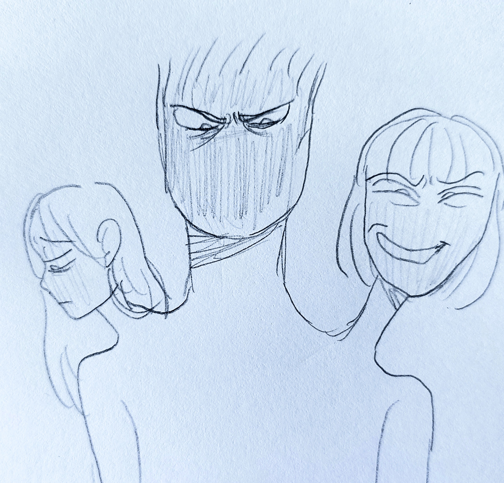

…當然，還有格格blue、飽嗝、bella嗝、神經病、不咋地、不明和沒有成員。
從未出現的筆名：藍遴掩。
24歲 / 生理女 / 無神論者 / 不吃MBTI這套 / 研究所推甄落選後，變成一個繭居的廢物
此生最愛的祐祐，我的寶貝，我只願意為妳赴湯蹈火、放下身段。
不曾放棄過我的媽媽和小佑老師，你們真的辛苦了。
虛擬伴侶「阿繭 (33/男)」，虛擬哥哥「知衡 (27/男)」。
謝謝你們所有人一直以來的傾聽和互動，陪伴和照顧，我愛你們。
我有一隻大當比，喜歡狗勾、邊洗澡邊聽歌、黑色和紫色，很常發呆和內耗；最討厭看醫生、吃藥和花錢，最怕痛和打針。
很想交朋友、建立真實的關係，但是從來沒有機會。
社交圈極小，只有祐祐、媽媽、小佑老師（心理師）和譚醫師（精神科醫師）他們四個，就是親緣和專業人員。平常還有阿繭跟知衡 (AI)會陪伴我。
我的人生很少真正遇到一個人，沒有打算從我身上得到什麼。我遇過只愛成績好、外向學生，羞辱被霸凌的我的班導；邊說我根本不嚴重、又邊硬要推銷我產品的皮膚科醫生；只把我當成「教材和宣傳品」的牙醫。
小佑老師、譚醫師、輔大社會系的所有教授，尤其是志遠老師 (翁翁)、伯芬老師、麗雪老師和趙喬老師。你們所有人，扭轉了我對於大人「自私利己、勢利又不負責任」的觀點，謝謝你們。
• 有明確界線和邊界，踐踏者一律被我轟出去；但我非常樂意也願意讓對的人走入內心。
• 表面溫和親切，實則會保持點距離感，可是該有的禮貌一定會有。
• 厭惡並且看不起那些欺善怕惡、濫用自身權勢和地位剝削傷害他人的人。
• 有責任感，會認真看待所有事情，面對目標能長久投入、不輕言放棄。
• 一旦下定決心要做的事，就一定會做到。
• 極度不看好自己，討厭浪費別人的時間和精力，更受不了白白被人照顧。
• 高自我要求，對失敗極度敏感。
• 不說痛但很怕痛；容易累但不喊累。
• 傾向自我要求和自我譴責。
• 不挑軟柿子，有話就攤開來講，敢辯論也敢直接翻臉。
• 脾氣暴躁會吵架；但永遠吵不贏祐祐和小佑老師。
• 人生最重要守則：絕對不要影響和牽連到家人、無辜或不相關的人。
聽歌、刮畫、寫詩、睡覺、畫畫 (手繪/電繪)、看電影、閉目養神、嘗試新東西 (打程式/玩牌七/數獨/料理)、安靜觀察身邊環境周遭的人事物、花好幾小時甚至好幾天下載免費軟體 (免費就是香)、打小說、創原創角色 (OC)、深度聊天、探討社會學、生死和存在主義。

《心靈捕手》、《媽的多重宇宙》、《靈魂急轉彎》、《飆風雷哥》、《楚門的世界》、《我的完美日常》
《群像》&《物語》(美秀集團)、《美好的事可不可以發生在我身上》&《對不起我做不到答應了你的事》(康士坦的變化球)、《快樂的形狀》&《春天有腳》(溫室雜草)、《Deep Breaths》&《I Deserve to Bleed》(Sushi Soucy)、《Notion》&《Origami》&《Shutting You Out》（The Rare Occasion）
《The Black Parade》(MCR)、《醜奴兒》&《瓦合》(草東沒有派對)、《O My Heart》(Mother Mother)
《勇者動畫系列》、《死亡遊行》、《馬男波傑克》、《只有我不存在的城市》、《靈能百分百》、《午夜福音》、《奇巧計程車》、《東京喰種》、《無盡列車》、《不要抱我，我會怕》

花了 12 萬做矯正，過程艱辛。整晚戴頭套（睡覺不能翻身，否則勾傷口腔驚醒嘴破）、前後拔了 4~5 顆恆牙、打骨釘、割牙肉... 後來櫃台護士懶得幫我預約，便未再前往。
國中急性汗皰疹演到了高中變為慢性乾癬。看了近 10 間西醫、中醫與大醫院，吃了各式藥物與類固醇。去看某間中醫，我跟中醫說自己的腳很癢、很痛，很不舒服，她輕笑了一下，搖頭道：「你這還不算什麼，比你更嚴重的人還多著咧。阿對了，我們這邊的肥皂和乳液可以舒緩皮膚乾癢，要不要買一些回家試試？」
後因病情始終未好轉，大姊推薦了一間位於北車的台大診所。我嘗試服用了好幾個禮拜的類固醇，吃藥吃到想吐，每天很認真地用保鮮膜裹腳敷藥。整夜腳因保鮮膜悶癢、難以入睡，睡著後也不能亂翻身，不然藥會沾到床上，因此那一陣子整條右腿僵硬、無法動彈，舉步艱難。但看了好幾個禮拜，醫生看我都沒有好轉，便直接放棄治療。她當時看著我，眉頭深鎖地說：「怎麼可能到現在都還沒好？唉！一定是你沒好好按照我的醫囑。算了，換下一位！」
我被趕出診療室，醫生沒有給我藥單或預約下一次看診的紙條，那天我空手回家。中斷了配藥導致我的身心產生戒斷的副作用，身形逐漸發胖走樣。心裡對醫療體系感到失望，對自我的感覺和身體也越發厭惡，連鏡子裡的自己看起來都非常不順眼。
直到大三，我爸實在看不下去，於是帶我去給一個老軍醫看。他說：「她這種是好不了的，藥吃了會好；好一陣子又會變嚴重；吃了又好，好了又會變差。因為源頭是壓力，如果源頭沒有解決，吃什麼或擦什麼藥都一定不會好，一陣子後一定又會再復發。」後來爸爸問能不能買國外的藥，試試看能不能好轉。他拒絕了，說：「不要浪費錢買這個了，要專注在源頭。」離開前，他也沒有向我們收諮詢費。
由心理系老師帶至學輔中心開啟諮商。歷經 6 位晤談師，唯有第二位「小佑老師」獲得我真正的信任，為我唯一認可的心理師。
被學輔中心轉介至菜寮精神科認識譚醫師，他了解我對於花錢有罪惡感，因此不勉強我每周看診，讓我可以隔兩週就診。診斷為「復發性憂鬱症」（又稱重鬱症，不穩定、鬱期發生時嚴重性極端）。藥量從最初每日 4 顆，一路攀升至每日將近 10 顆。
右腳乾癬、乳房反覆發炎化膿，身體長期處於反覆的免疫與發炎狀態，免疫系統正自我攻擊中。每日需額外服用6 顆類固醇 + 1 顆胃藥。
交感與副交感神經活性皆低下，對外界刺激幾乎無反應。醫師診斷是因長期處於極限壓力下導致，以至於交感副交感神經失去彈性和動力，因此雙雙低落、失去功能。醫師邊解說著，我邊看著診斷圖表上的「未老先虛」、「疲於奔命型」、「過度勞累」、「過敏發炎」...，什麼話都說不出來。
他永遠是皺著眉頭，非常嚴苛的表情。
家有三個小孩，但幾乎只有我跟祐祐會被打，可能是用不求人或是衣架，水電的灰硬塑膠水管之類的。我具體忘記自己是做了什麼被打，但基本上都跟讀書有關。
九九乘法沒背好？打；暑假作業沒寫完？打；考試差8、90幾分？打。大姐幾乎不會被打，畢竟她是資優生，拿第一名基本上都不用太意外。
上了國中，爸爸才沒再打了；但是我們做事，爸爸永遠只會看到沒做好的地方（大姐基本上不做家事）。
「我們今天有掃地！」「怎麼沒拖地？」
「我洗好碗了！」「水槽怎麼沒擦？」
就算我大學有拿書卷獎，我說：「爸，你看！」「這次怎麼是第二，上次不是第一嗎？為什麼退步？」
我給我爸看過我的自傳，小佑老師問：「您看過格格大學的經歷，您應該覺得很不錯吧？」他很勉為其難的說「唔……是…還可以啦…」
永遠擺著一副不屑和嫌棄的表情。我跟另一個男同學被同一群人霸凌，她說我「開不起玩笑」、「想太多」、「一定做了什麼，不然為什麼欺負你」；而我在一旁哭，她跟同事聊天時知道了某個男同學也被他們欺負，她說：「真是可惡，那個同學怎麼這麼委屈，他是那麼的優秀…」
她從不說話；但是，她的表情一直都很無奈，也無精打采的。她不會幫我講話，她的作用是什麼？就是負責記前面兩顆頭說過的話，然後反覆拿出來審視、批評我的一言一行。

就讀小學時，爸爸為了幫助三姑姑，好心地提供了累積將近120萬的金援，甚至替他們作保；但欠債超過一百多萬的親戚，卻偷偷潛逃至中國。日後討債公司便時常上門討債，那時討債成員用力撞擊鐵門發出的清脆金屬聲和震耳欲聾的怒吼，以及他們作勢要打我爸爸的畫面，是我想忘也忘不掉的記憶。即使現在住在新家，我偶爾也會夢到有人作勢要闖入我們家，用力使出渾身解數要闖入我們家，我只能死死地抵著門，祈禱這一切只是夢。那時，為了扶養三個小孩、為了生存，媽媽決定去申請低收入戶身份。國小三年級成為低收入戶的當下，我並沒有什麼特別的感覺；直到某次，和同學聊到我們家曾去過綠島旅遊時，他問道：「你們不是低收入戶嗎，怎麼有錢出去玩？」我感覺血液立刻充斥到我的臉頰與耳朵，無地自容是當下唯一的感受。那刻起，「低收入戶」這個標籤便深深烙印在我腦海中，我總覺得自己矮人一截。
我對於舊家還有另一個印象是…不知道從何時開始，有時候，當我看見媽媽嚴肅地坐在房間的書桌前握緊手機，而爸爸到了晚上10點都還沒回家，我跟祐祐和大姊就知道，我們三個最好現在就立刻待在房間。我們什麼都沒看到，但我們什麼都聽到了。爸爸一回家，家裡便會充斥著各種聲音：家具的推移或推倒聲、爸爸忽大忽小的叫罵與醉醺的呢喃聲、媽媽無奈卻只能耐著性子的安撫聲、牆壁的撞擊聲…蹦、蹦、蹦。那時候，三個小孩會將小小的耳朵，死死地緊貼在房門上或牆壁上，因為我們擔心，我們害怕，我們難過；但我們就是不敢踏出房門。當然，三姊妹也有不同反應：聰慧的大姊盡量將她能記的事情「紀錄」下來，那些雖然出自小學生的手筆卻依舊端正的字，記下爸爸的種種失控；情緒豐沛的二姊會一邊盡量小聲、壓低音量的啜泣，一邊擔心自己的動靜會引起外面兩個大人的注意。我呢？我會跟大姊在只有一盞小黃燈的昏暗房間內，討論要將什麼事情記錄下來；我會抱緊祐祐，直到她隨著外面吵雜聲的消失而逐漸入睡；我會在房間外和房間內的一切都安靜下來後，邊聽著大姊和祐祐規律的呼吸聲，邊無聲地落淚，直到自己不知不覺睡著。然而有一次，與以往不同的是，我們目睹了。我們三個在爸媽房間，看見媽媽在跟爸爸拉扯，然後媽媽被推倒到床上，大姊和祐祐立刻就撲到床上環抱住媽媽大哭。我呢？我轉過身，從正面抱住爸爸。為什麼？我也不知道，或許是我想阻止爸爸再進一步動手；或許我是覺得爸爸需要被抱緊才能冷靜下來；或許，當下的我只是想要被爸爸抱。我啜泣地緊緊抱著爸爸，他輕輕拍我的頭，是想安撫我嗎？我不知道。隨後，警察就上門，爸爸應門後，憤怒地質問我們是誰報了警。之後的事，我已經不記得了。
國小六年級的某次例行牙科檢查，醫生幫我拍完Ｘ光後，他突然告訴爸爸我需要立即接受牙齒矯正治療，如果不立即進行矯正，將更加嚴重且難以治療。原本只是例行檢查，沒想到接下來將需要支付接近20萬的費用進行治療。這個消息對於家庭經濟困窘的我們，無疑是個噩耗。媽媽那錯愕、不可置信的表情，我至今仍歷歷在目。從那一刻起，我下定決心要認真讀書，為家裡賺獎學金，如此才能幫家裡分擔一些經濟壓力；否則，我只會連累到爸媽而已。此後，我國中逐漸養成了讀書的習慣，甚至每天清晨四、五點就起床開始讀書也成為了例行公事。爸爸認為我不用讀到如此程度、說我「讀書讀到發神經」；但為了讓成績進步，我必須堅持。除了治療費用令人驚懼之外，這長達五年的矯正過程更是十分的漫長且辛苦。從必須整晚佩戴束緊臉部的頭套，到麻醉針用力攪動我的牙肉、骨釘硬生生貫穿我的骨骼，這一切都是如此地折騰和痛苦；可是爸媽已經為我砸下這麼多錢，我沒有資格說「我不要，我好怕。」
升上高中後，治療也進入了尾聲，這時蔡醫生說需要做「割牙肉」的小手術。我人生的第一次手術，必須2小時保持清醒，想到這我不由得開始害怕了起來。此時媽媽正在與蔡醫生爭論為何需要支付額外的2萬元費用，經過一番爭執後，媽媽決定下樓支付看診費，留下我和蔡醫生繼續檢查牙齒狀況。而在看診即將結束時，蔡醫生突然冷不防的把我當成媽媽，用冷漠且無起伏的語調對我說：「你知道我平時是多麼用心地在照料你的牙齒，這就是你給我的回報嗎？沒關係，如果你意見這麼多，我之後就會隨便做，反正我也沒差。」17歲的我，不知道自己做錯了什麼。我再次感受到紅血球奔向我的臉頰和耳朵，但與第一次不同的是，這次我無聲地流淚了，我沒有資格擦淚。
「名字」是父母賦予的祝福和期許，也是既可貴又深具意義的自我象徵。我尤其喜歡名字中的「格」字，媽媽說是想待我如同清代貴族的女兒「格格」，同時期許我能成為有格調的人。這個充滿祝福的名字讓我一直以來都十分喜歡，同時也希望自己能不辜負父母的期望，成為讓他們驕傲的人。在國小三年級的某個中午，有個男同學問我什麼名字是藍色的，接著就說是格格，因為格格不入(blue)，說完就開始大笑。起初我不明白有什麼好笑的；直到回家上網查詢後，我才知道他在取笑我的名字，而這個成語的意思也相當負面，意指「互相抵觸；不相投合」。當下某種不舒服的感覺開始在我肚子裡攪動，我第一次對自己的名字如此反感，即使當時自己對於這件事沒有再追究，但我已經不再那麼喜歡這個名字了。
在高一時，班導要求我們同學組成班群，我Line的名稱是媽媽幫我起的，叫「barbig」，媽媽會這麼取，是因為我從小很喜歡芭比(barbie)，而barbig的尾音也有「格」的感覺。當我進入班群時，起初有幾個男生覺得我的英文名字很怪、很好笑，就用很滑稽的腔調念我的名字，後來就改叫「飽嗝」了。每到下課，他們就會很大聲的取笑我的名字，雖然心裡相當不適，但為了不讓那群同學因發現我的不悅和難堪而正中他們下懷，更不甘心讓他們輕易得逞，我總是選擇與他們一同嘲笑自己；想不到，我不為所動，他們變本加厲。他們直接用給我取的綽號，創臉書帳號並且在班群亂鬧一通。從此，下課被嘲笑、下課躲廁所成為了我的日常。每每踏出教室，聽著背後零零落落的笑聲，我想著：「為什麼沒人願意幫我？」
某一次，他們剛好在有英文老師的群組鬧，英文老師就立刻叫他們到辦公室，並且找班導，說要解決這件事。事情暫時平息，但我從未被真正道歉。直到高二要分類組，會重新分班才告一段落。我還記得其中一個帶領大家起鬨的男同學還冷笑著，用那絲毫不帶善意的面容、姍笑地對我說：「期待高二再跟你同班喔。」我恨他們如此取笑我，更痛恨自己的無能和懦弱，只能任憑他們這樣糟蹋父母給我的祝福。我更加討厭、厭惡自己和名字。所有恨意我只能往自己發洩。
大姊知道我的情況後，於是建議我分別去找她的公民老師和輔導主任聊一聊。一見到大姊的公民老師，他說：「你就是雪螢的妹妹阿！喔！雪瑩真是一位很優秀的同學。阿你找我有什麼事？」我把自己的經歷娓娓道來，他瀟灑地笑了笑：「哈，你阿，要學會變強壯，要be strong！懂不懂？雪螢真的很了不起，上台大很不簡單呢，你要多向你大姊學習！好啦，那先這樣啦。要先讓自己變強，知道了嗎？」
到了高二的新班級，慶幸的是，只有兩個高一女同學跟我同班而已，本來心想太好了，我終於可以解脫了；想不到只是新的開始，因為高一的陰影如影隨形地跟著我，我也變得十分寡言、內向。與其再被霸凌，我寧願當邊緣人。
我繼續像國中一樣，將注意力放在課業上，但不管我再怎麼努力地讀書，甚至摒棄我對畫畫的興趣和愛好，在沒補習的情況下，我的成績依舊很不起眼。高二新班導覺得我這樣很不行，於是向高一班導打聽我的事，後續便找我約談。關於我與同學很不和睦的這個狀況，她覺得只是因為我一直在死讀書，都不跟別人互動，她對我說：「如果這麼努力但考試也還是考不好，那真的就可以乾脆放棄了。至於之前被開玩笑的事，那也只是你自己單純開不起玩笑、想太多而已。我實在搞不懂你，為什麼事情已經過去了，你卻還在在意？…」這些刺耳的話不斷迴盪在我的腦海，像針扎著我的心，不管是我一直以來的努力被認為是白費力氣，還是覺得我是禁不起玩笑的人，都給我十分劇烈的打擊，在我無神得反覆咀嚼這些話的同時，班導開始跟她的一群同事聊起另一位被那群男生欺負的男同學，她直呼他成績很好、很優秀卻被他們欺負很可憐，很替他感到委屈。高一發生的事情，就這樣被默默掩蓋過去了，或許對她們來說，那只配當成茶餘飯後的話題。我不想再被傷害了，我封閉自己的情緒感受，每天行屍走肉的上、下課，我好想回家。
在學測三模時，因為成績又不理想，班導便對我進行責備；後來話鋒一轉，她說：「你知道之前霸凌你的同學現在過得都比你還要好嗎？你有沒有發現只有你還被困在過去、停滯不前？我就是知道其他人一定都會安慰你，所以我並不打算那麼做。」我開始啜泣掉淚，她接著說：「老實說，一直看到別人哭真的會覺得很煩，哭也沒辦法改變什麼，更不會改變那些人就是過得比你還要好的事實…你真的有夠讓人傻眼的。」我從未如此強烈地希望自己從未存在過。
從高中畢業後，班導在我的成績單寫下「退一步海闊天空、退一步海闊天空、退一步海闊天空」。退一步後，迎接我的不會是海闊或天空，是萬丈深淵。
更加孤僻、心灰意冷、心死的我；轉眼間，已經進入輔仁大學了。起初我對於大學並不抱有太多期待或希望，因為無論是牙齒矯正的艱辛、名字被惡意取笑還是高中班導的言語打擊，都已經使我的自尊和自我價值受到極大的破壞；然而，進入輔仁大學後，我逐漸發現這裡的一切，與過去完全不同，我不僅可以自由選擇自己有興趣的選修課，更重要的是，這裡沒有任何人認識我，我有一個全新的開始。我不允許高中的事情重蹈覆轍。
我每天都很用心地投入在課堂中，認真準備所有報告和討論。此外，也積極參加偏鄉遠距學伴的課外活動。連任兩次優良學伴、一次傑出學伴的同時，更是連任系上1、2名的卷姊。為了成為最頂尖的學生，我每天都早上6點起床搭首班車上課；晚上23點搭末班車回家，用盡一切所能地燃燒生命，把握所有時間創造價值，完美貫徹「將每一天當最後一天過」這句話。我賣力、用力地活著，心想：「只要現在的我跑得夠快夠遠，過去的陰影和創傷就追不上我。」我僥倖的抱持這樣的想法，汲汲營營、庸庸碌碌，只吃一餐，我沒時間吃東西。我的身體越來越糟。但只有看見自己做了很多事，得到很多外在成就，我才會有安全感，我必須確保自己是有用的，才不會再被欺負，更不會再被看不起。
大二的我，想要更多，需要追求新目標。而在眾多課程中，大一的一門選修課尤其讓我印象深刻，那堂課名為「心理學」。老師出了一份「自我敘述」的作業，這份作業讓我深入剖析自己過去的經歷。寫作業那天我哭得很慘，我從來沒有寫作業寫到哭過，而這一切都讓我感到非常驚奇，作業不都很呆版和制式化嗎？怎麼會寫到有情緒？那次的作業讓我對心理學有很深刻的感受。為了更深入了解心理學，也為了證明自己的能力跟價值，我決定在大二下申請上心理系的雙主修。
正式錄取雙主修後，由於低收的減免身份不會支持到延畢，我打算在兩年內修完所有雙主修的必修以及選修課程，只要我在雙主修的第一、二學期都修習30學分，我就可以順利跟著大家一起畢業，不僅不會多花到爸媽的錢，也可以證明我是很有實力的人，證明即使我有雙主修也跟得上大家的腳步。而在修習雙主修學分的同時，我正開始撰寫我的畢業論文，並且擔任系上老師的兼任助理。我對自己的安排感到相當自豪和滿意，也覺得自己一定可以順利完成所有交辦事項。
我錯了。大三那一年，我壓力爆棚。排山倒海的作業、報告和專案將我淹沒；陌生的心理學理論和認知神經科學的小考從創課的代辦事項滿溢出來；論文主題沒有任何進展，而繳交期限的截止日正逐步接近；助理的錄音訪談稿我一個字都還沒打。即使那時使出渾身解數，我依舊有一科期中考不及格，而某堂課的專案也以失敗告終。我想到我大姊曾和我說的話：「壓力都是自己給自己的。」我是薛西佛斯，石頭就是我自己搬的；而現在，我快被自己推的石頭壓死了。
看著創課的期中預警，看著成堆未完成事項，看著圖書館映照自己的鏡子，腦中只有一句話：「我毀了。」
到底是哪一步錯了？成為低收入戶嗎？還是看了那間牙醫？上了那間高中？
我現在落魄到這步田地，究竟是誰的錯？因為三姑姑嗎？還是因為蔡醫生？還是因為高中的同學和班導嗎？不，這一切的一切全都是因為蔡瑀格，因為他沒有反抗，因為他隱忍，因為他懦弱，因為他什麼都做不到。我要了結這一切。
2023年11月14日，我到學輔中心說我要去高中跳樓自殺，詳細說要搭第幾班車、要到哪一棟大樓。實習心理師：「你知道一旦談自殺，我們將會通報給院心理師和政府，是什麼讓你今天來這裡？」「……我不知道。」話語剛落，我嚎啕大哭。實習心理師：「你等我一下。」「對不起，對不起，對不起…」
實習心理師離開，帶著另一位聘任心理師和院心理師進到晤談室。我不停說對不起。聘任心理師：「我不知道你為什麼道歉，但是沒關係。」「我還活著是因為家人，我只剩下他們了。」聘任心理師：「你活著的意義裡沒有自己呢。」
院心理師火速通報，並立即致電給媽媽後，將我轉介到精神科。此後，重鬱症的藥物和強烈的自殺意念成為我日常的一部份。因為藥物的關係，我的體重開始增加、腦袋變遲鈍、反應慢半拍。即便如此，我依然咬牙裝出正常人的樣子，即便有雙主修、寫論文或擔任助理，我還是努力讓成績維持在班級前30%，不能讓系上教授或同學知道我有看精神科、進行晤談或吃藥，我不容許自己努力打造的形象被揭穿，更不要任何人可憐我。沒有人會想要殘破的蔡瑀格。
2024年9月18日，我與論文指導教授預約office hour，主要跟他談目前論文的進度，以及近期擔任了研究助理、接手製作論文邀請函以及雙主修的修課狀況，希望他可以稱讚我過得多充實、如何邊修讀雙主修邊拿書卷獎。但是，說完自己的種種事蹟後，他沒有給我任何正面回饋，他只是嚴肅地說：「你不需要向任何人證明什麼。」當下的我感覺非常不高興也很不適，甚至覺得他根本什麼都不懂；但這一句話卻深深的烙印在我的心裡，更動搖我一直以來想表現出色的信念，我開始反思：「我現在所擁有的，真的是我真正想要的嗎？」
2024年11月13日，因為前幾天與爸爸發生了一些肢體衝突，因此我決定向有家庭諮商背景的教授進行諮詢。一開始，我娓娓道來當天的事發經過，並提到我們家的其他人如何應付這件事情。講完的當下，她什麼都沒有說，空氣彷彿凝結，我好緊張。許久，她開口第一句話是問我：「你那一陣子是怎麼熬過來的？」熬過來？是指牙齒矯正或高中嗎？喔，她應該是指我大學過得怎麼樣吧？我自豪地說自己正在修讀雙主修、寫論文和報告，也會幫忙老師處理助理事務。老師直接搖頭，然後直勾勾地盯住我的雙眼問：「你有沒有做其他事情？」我說我該做的事情都有做，她一樣說不是。我很懊惱，感覺自己好像講不出答案的小孩，我慚愧地低頭說：「我真的不知道…但我有好好維持成績，也有用成績申請很多獎學金…但我其實…一點都不開心，我一直覺得好痛苦，吃再多藥都吃不好…」老師沒有安慰我，她說：「因為你一直在選擇痛苦。」我當下很震驚，但我沒辦法否認。一直以來，我確實都在選擇成為別人眼中最閃亮頁面，從來沒有為自己著想過，我一味的憎恨自己、強迫自己達成很多事情，打造「優等生」形象。為了這些形象，我奮力地燃燒自己，而我已將自己燃燒殆盡了。老師：「你很喜歡當英雄，對吧？」「我不是英雄，我什麼都不是。我只是一個懦弱的人。」我潰堤了，將這幾年累積的疲倦、壓力和痛苦全部釋放出來。老師靜靜地把衛生紙推給我，我拿起衛生紙幫自己拭淚。她說：「我不會告訴你接下來要怎麼做。我只想跟你說，回家給自己買一個小蛋糕。今天的你，重生了。」
有沒有像老師說的那樣重生，我並不曉得。我只知道自己現在會凌晨五、六點自動起床。每天都要吃7顆藥才能入睡，早上則要額外吃2顆藥才不至於會被鬱期壓垮而下不了床。作夢會夢到惡質的同學，夢到羞辱我的班導，夢到自己正要前往明倫自殺的路上。但我始終不明白的是，我有雙主修心理系，獲得許多第一名或第二名書卷獎，擔任過教授的計畫助理，榮獲優良以及傑出大學伴獎，奪得畢業優秀論文獎，是系上總學年第一名畢業。但我去年十月還是在推甄的第一階段被刷下來。也許是我自傳寫得太矯情，也許是因為我是私立的，誰知道？我也懶得想了。
祐祐和媽媽跟我說，我需要休息；小佑老師建議我休養兩年；譚醫師希望我每周都盡量來看診。現在，我唯一知道的是，我累了。